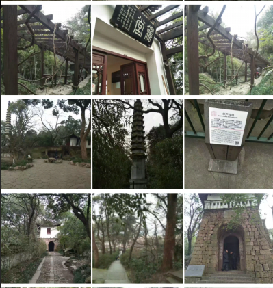

我的名片

网名：凌波微步
职业：IT | web前端设计
爱好：旅游、摄影、平面设计
现居：广西 桂林
————Blog changes Life————
我的文章


大数据时代背景下的人工智能
我们身处在一个信息时代，人们每天都会通过各种各样的渠道去接受信息、传递信息。现如今我们一天接受的信息量可能比古人几年接受的都多。
我国网络空间安全存在的问题及治理对策
摘 要：随着信息技术的发展和互联网的进一步普及,我国网络空间日趋庞大和复杂,而网络空间的治理却相对滞后:网络立法不够系统和全面,需要进一步完善
Web前端的核心技术与发展历程
前端开发是创建Web页面或app等前端界面呈现给用户的过程，通过HTML，CSS及JavaScript以及衍生出来的各种技术、框架、解决方案，来实现互联网产品的用户界面交互。
大数据时代背景下的人工智能
我们身处在一个信息时代，人们每天都会通过各种各样的渠道去接受信息、传递信息。现如今我们一天接受的信息量可能比古人几年接受的都多。
我们身处在一个信息时代，人们每天都会通过各种各样的渠道去接受信息、传递信息。现如今我们一天接受的信息量可能比古人几年接受的都多。
我国网络空间安全存在的问题及治理对策
摘 要：随着信息技术的发展和互联网的进一步普及,我国网络空间日趋庞大和复杂,而网络空间的治理却相对滞后:网络立法不够系统和全面,需要进一步完善
摘 要：随着信息技术的发展和互联网的进一步普及,我国网络空间日趋庞大和复杂,而网络空间的治理却相对滞后:网络立法不够系统和全面,需要进一步完善
Web前端的核心技术与发展历程
前端开发是创建Web页面或app等前端界面呈现给用户的过程，通过HTML，CSS及JavaScript以及衍生出来的各种技术、框架、解决方案，来实现互联网产品的用户界面交互。
前端开发是创建Web页面或app等前端界面呈现给用户的过程，通过HTML，CSS及JavaScript以及衍生出来的各种技术、框架、解决方案，来实现互联网产品的用户界面交互。
本站运行时间
————Traval Tips————

——魔都 · 上海——

——西泠 · 印社——



谢谢观看